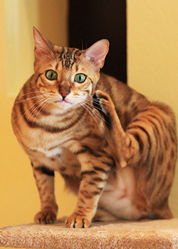
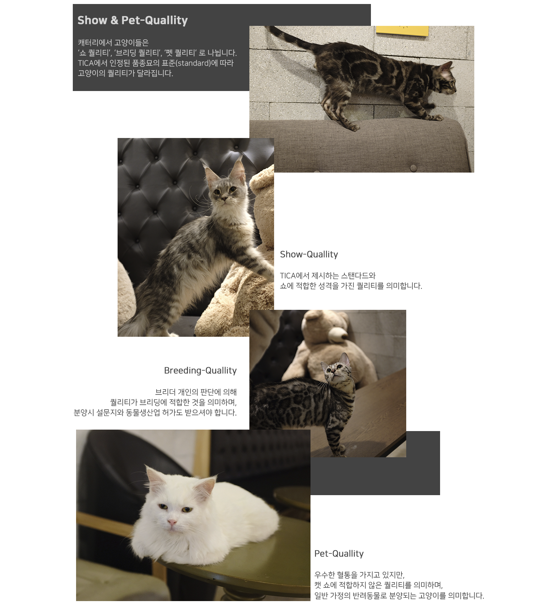

Cat's Claw는 2015년 부터 울산에서 뱅갈과 메인쿤을
전문적으로 브리딩하는 작은 캐터리 입니다.
TICA 및 KOCC에 등록되어 있는 정식 캐터리면서,
올바른 브리딩과 애묘문화를 추구하는 캐터리입니다.
전문적으로 브리딩하는 작은 캐터리 입니다.
TICA 및 KOCC에 등록되어 있는 정식 캐터리면서,
올바른 브리딩과 애묘문화를 추구하는 캐터리입니다.

BENGAL CAT
뱅갈은 아시아 레오파트 고양이(ALC)와 집고양이의 이종교배로 탄생한 하이브리드 고양이고,
표범을 떠올리게 하는 아름답고 화려한 무늬가 특징이며 부드럽고 윤기가 흐르는 털로 유명합니다.
이 고양이는 호기심이 많고 주인과 함께 노는 것을 좋아하며 매우 영리한 고양이로 사랑받는 고양이 중 하나입니다.
그리고 고양이중 거의 유일하게 훈련이 가능하며 다른 품종과 달리 물놀이를 좋아합니다.
MAINCOON CAT
메인쿤은 가장 길기로 유명한 품종 중 하나이며 2006년에 가장 긴 고양이로 기네스북에 오르기도 했습니다.(120cm)
중후하고 부드러운 여러 색의 털을 가지고 있는 메인쿤은 미국 유일의 독립 품종으로
1850년경부터 메인 주에서 사육되었기 때문에 이런 이름이 붙여졌습니다.
하지만 그 크기에 반전되는 성격을 가지고 있습니다. 메인쿤의 별명은 “부드러운 거인”이라 불릴 정도로 사교적입니다.
뛰어난 지능과 장난기 있는, 부드러운 성격으로 유명한 메인쿤은 종종 “개와 같은 특성을 가진 것”으로 인용됩니다.
특히 해외의 자폐증 아이들의 치료에 많은 도움을 준 사례가 있어 최근에 더 유명해진 고양이입니다.

Show & Pet-Quallity
캐터리에서 고양이들은
'쇼 퀄리티', '브리딩 퀄리티', '펫 퀄리티'로 나뉩니다.
TICA에서 인정된 품종묘의 표준(standard)에 따라
고양이의 퀄리티가 달라집니다.
Show-Quallity
TICA에서 제시하는 스탠다드와
쇼에 적합한 성격을 가진 퀄리티를 의미합니다.
Breeding-Quallity
브리더 개인의 판단에 의해
퀄리티가 브리딩에 적합한 것을 의미하며,
분양시 설문지와 동물생산업 허가도 받으셔야 합니다.
Pet-Quallity
우수한 혈통을 가지고 있지만,
캣 쇼에 적합하지 않은 퀄리티를 의미하며,
일반 가정의 반려동물로 분양되는 고양이를 의미합니다.
Cat Show
TICA에서 제시하는 스탠다드를 중심으로 고양이를 평가하는 중요한 심사이며,
이 과정을 통해 받게 되는 타이틀을 브리더는 큰 영광으로 여깁니다.
저희 C.C(Cats Claw)캐터리는 이런 캣쇼에
다양한 타이틀을 가진 고양이들로 구성되어 있습니다.
Contect
| KakaoTalk | ysb0924 |
| qhddl555@naver.com |